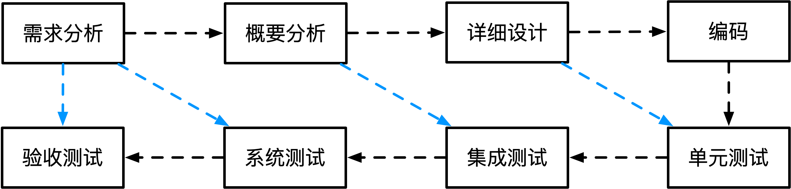

瀑布模型(SDLC)
定义阶段：软件设计和需求分析
开发阶段：软件设计，程序编码和软件测试
维护阶段：运行维护
存在的问题：需求分析难以把控，出现需求问题需要重新回到需求分析
瀑布模型适用场景：需求明确
原型模型和演化模型
原型强调构造一个简易的系统，针对需求不明确的情况
通过原型来获取需求(原型交互)
演化模型是从原型发展而来，即演化原型成为最终的产品
螺旋模型虽然也是从原型发展而来，但是其兼具瀑布模型的特征和演化模型的特征
增量模型
增量模型兼具瀑布模型和原型的特点，一步一步执行，可以把待开发的软件系统模块化，将每个模块作为一个增量组件，从而分批次地分析、设计、编码和测试这些增量组件
螺旋模型
兼具多个模型的特点，大致分为制定计划、风险分析、实施工程和客户评估这几个方面（引入了风险分析这个环节，其它模型都没有，是螺旋模型最显著的特征）
V模型
特点：
- 经过四重测试，包括单元测试、集成测试、系统测试和验收测试
- 在需要分析阶段就进行验收测试和系统测试，在概要设置阶段进行集成测试，在详细设计阶段进行单元测试，即提前测试
喷泉模型
特点：
面向对象，迭代且无间隙
RAD(快速开发模型)
使用SDLC（瀑布模型）和CBSD（构建组建模型组成）
特点： 快速构建应用系统
CBSD

把软件中模块组成标准的构建，构件进行组装
特点：
极大提高软件开发的复用性，极大节约开发的总时长，增加软件可靠性，节省成本
敏捷开发方法

特点：
适用于小型项目，强调小步